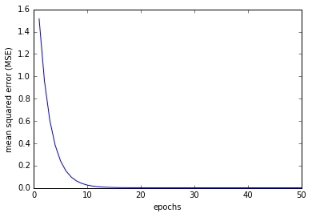

LinearRegression
A implementation of Ordinary Least Squares simple and multiple linear regression using TensorFlow.
from mlxtend.tf_regressor import TfLinearRegression
Overview
The linear regression model is fitted using gradient descent optimization supporting simple and multiple linear regression; for more information on linear regression, please refer to the documentation of the related
mlxtend.regressor.LinearRegression estimator and the tutorials:
- Gradient Descent and Stochastic Gradient Descent
- Deriving the Gradient Descent Rule for Linear Regression and Adaline.
References
- F. Galton. Regression towards mediocrity in hereditary stature. Journal of the Anthropological Institute of Great Britain and Ireland, pages 246–263, 1886.
- A. I. Khuri. Introduction to linear regression analysis, by Douglas C. Montgomery, Elizabeth A. Peck, G. Geoffrey Vining. International Statistical Review, 81(2):318–319, 2013.
- D. S. G. Pollock. The Classical Linear Regression Model.
Examples
Example 1 - Simple Linear Regression
Generate some sample data
import numpy as np
import matplotlib.pyplot as plt
np.random.seed(1)
X = np.array([np.random.normal(1.0, 4.55) for i in range(100)])
y = np.array([x1 * 0.1 + 0.1 + np.random.normal(0.0, 0.05) for x1 in X])
X = X[:, np.newaxis]
plt.scatter(X, y)
plt.show()

Fit regressor and check MSE cost
from mlxtend.tf_regressor import TfLinearRegression
gd_lr = TfLinearRegression(eta=0.05,
epochs=5,
random_seed=1,
print_progress=3)
gd_lr.fit(X, y)
print('Intercept: %.2f' % gd_lr.bias_)
print('Slope: %.2f' % gd_lr.weights_)
plt.plot(range(1, gd_lr.epochs+1), gd_lr.cost_)
plt.xlabel('epochs')
plt.ylabel('mean squared error (MSE)')
plt.show()
Epoch: 5/5 | Cost 2.40 | Elapsed: 00:00:00 | ETA: 00:00:00
Intercept: 0.10
Slope: 0.39

Continue training for another 50 epochs
gd_lr.epochs = 50
gd_lr.fit(X, y, init_weights=False)
print('Intercept: %.2f' % gd_lr.bias_)
print('Slope: %.2f' % gd_lr.weights_)
plt.plot(range(1, gd_lr.epochs+1), gd_lr.cost_)
plt.xlabel('epochs')
plt.ylabel('mean squared error (MSE)')
plt.show()
Epoch: 50/50 | Cost 0.00 | Elapsed: 0:00:00 | ETA: 0:00:00
Intercept: 0.11
Slope: 0.10

Visualize the regression fit
def lin_regplot(X, y, model):
plt.scatter(X, y, c='blue')
plt.plot(X, model.predict(X), color='red')
return
lin_regplot(X, y, gd_lr)
plt.show()

Tip: If we are using gradient descent, we should consider standardizing the feature variables for faster convergence:
X_std = (X - np.mean(X)) / X.std()
y_std = (y - np.mean(y)) / y.std()
gd_lr = TfLinearRegression(eta=0.5,
epochs=10,
random_seed=0,
print_progress=3)
gd_lr.fit(X_std, y_std)
plt.plot(range(1, gd_lr.epochs + 1), gd_lr.cost_)
plt.xlabel('Epochs')
plt.ylabel('Cost')
plt.tight_layout()
plt.show()
Epoch: 10/10 | Cost 0.01 | Elapsed: 0:00:00 | ETA: 0:00:00

lin_regplot(X_std, y_std, gd_lr)
plt.show()

Example 2 - Multiple Linear Regression
Loading the Boston Housing Data
from mlxtend.data import boston_housing_data
from mlxtend.preprocessing import shuffle_arrays_unison
X, y = boston_housing_data()
X, y = shuffle_arrays_unison([X, y], random_seed=1)
X_test, y_test = X[:50], y[:50]
X_train, y_train = X[50:], y[50:]
# standardize
mu1, mu2 = X_train.mean(axis=0), y_train.mean()
sigma1, sigma2 = X_train.std(axis=0), y_train.std()
X_train = (X_train - mu1) / sigma1
X_test = (X_test - mu1) / sigma1
y_train = (y_train - mu2) / sigma2
y_test = (y_test - mu2) / sigma2
Fit the regression model
gd_lr = TfLinearRegression(eta=0.1,
epochs=200,
random_seed=1,
print_progress=3)
gd_lr.fit(X_train, y_train)
plt.plot(range(51, gd_lr.epochs + 1), gd_lr.cost_[50:])
plt.xlabel('Epochs')
plt.ylabel('Cost')
plt.tight_layout()
plt.show()
Epoch: 200/200 | Cost 0.27 | Elapsed: 0:00:00 | ETA: 0:00:00

Evaluate the results
from sklearn.metrics import r2_score
from sklearn.metrics import mean_squared_error
y_train_pred = gd_lr.predict(X_train)
y_test_pred = gd_lr.predict(X_test)
print('MSE train: %.3f, test: %.3f' % (
mean_squared_error(y_train, y_train_pred),
mean_squared_error(y_test, y_test_pred)))
print('R^2 train: %.3f, test: %.3f' % (
r2_score(y_train, y_train_pred),
r2_score(y_test, y_test_pred)))
MSE train: 0.265, test: 0.247
R^2 train: 0.735, test: 0.780
API
TfLinearRegression(eta=0.1, epochs=50, print_progress=0, random_seed=None, dtype=None)
Estimator for Linear Regression in TensorFlow using Gradient Descent.
Added in version 0.4.1
Methods
fit(X, y, init_weights=True)
Learn weight coefficients from training data.
Parameters
-
X: {array-like, sparse matrix}, shape = [n_samples, n_features]Training vectors, where n_samples is the number of samples and n_features is the number of features.
-
y: array-like, shape = [n_samples]Target values.
-
init_weights: bool (default: True)Reinitialize weights
Returns
self: object
predict(X)
Predict class labels of X.
Parameters
-
X: {array-like, sparse matrix}, shape = [n_samples, n_features]Training vectors, where n_samples is the number of samples and n_features is the number of features.
Returns
-
class_labels: array-like, shape = [n_samples]Predicted class labels.